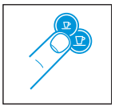
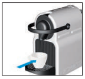
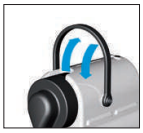

Instrucciones máquina de café
Preparación
- Enjuagar y llenar el depósito con agua potable.
- Encender la máquina presionando el botón Espresso o Largo.

- Las luces parpadearán durante el calentamiento (aproximadamente 25 segundos) y quedarán fijas cuando la máquina esté lista.
Hacer el café
- Levantar la palanca e insertar una cápsula Nespresso.

- Cerrar completamente la palanca y colocar una taza debajo del dispensador.

- Presionar el botón Espresso (40 ml) o Largo (110 ml).
- El café se dispensará automáticamente. Puedes detener o aumentar la dispensación presionando nuevamente el botón Espresso/Largo.
Retirar la cápsula
- Levantar y cerrar la palanca para expulsar la cápsula usada al recipiente de cápsulas.

Precauciones de seguridad
- No levantar la palanca durante la dispensación del café.
- No insertar los dedos debajo del dispensador ni en el espacio de las cápsulas.
- Usar solo agua potable y no dejar agua en el depósito por más de dos días.
- Apagar la máquina presionando simultáneamente los botones Espresso y Largo.